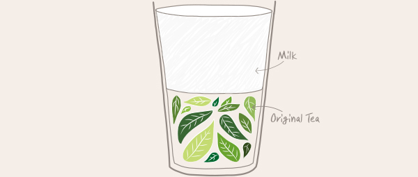

-

TEA RECIPE - 티 레시피
오리지널 티 - Original Tea
티백이나 가루가 아닌 황실에 바치던 잎차만 골라 1도 1초도 어기지 않고 차마다 다른 황금률로 우려 한 잔 한 잔 부드러움을 더해 만듭니다.
-

TEA RECIPE - 티 레시피
밀크티 - Milk Tea
최적의 자연이 키워낸 입차만 골라 각 차종에 맞는 황금률로 우려 담백한 우유와 허니, 카라멜 등 새로운 맛을 더해 만듭니다..
-

TEA RECIPE - 티 레시피
밀크폼&치즈폼 – Milk Foam&Cheese Foam
프리미엄 잎차만 골라 차마다 다른 황금률로 우려 달콤짭조름한 밀크폼 또는 치즈폼을 더해 만듭니다.
-

TEA RECIPE - 티 레시피
과일 그린티 – Fruit Green Tea
찻잎의 푸름을 간직한 녹차만 골라 최적의 온도 89℃로 우려 달콤상큼한 과일을 더해 만듭니다.